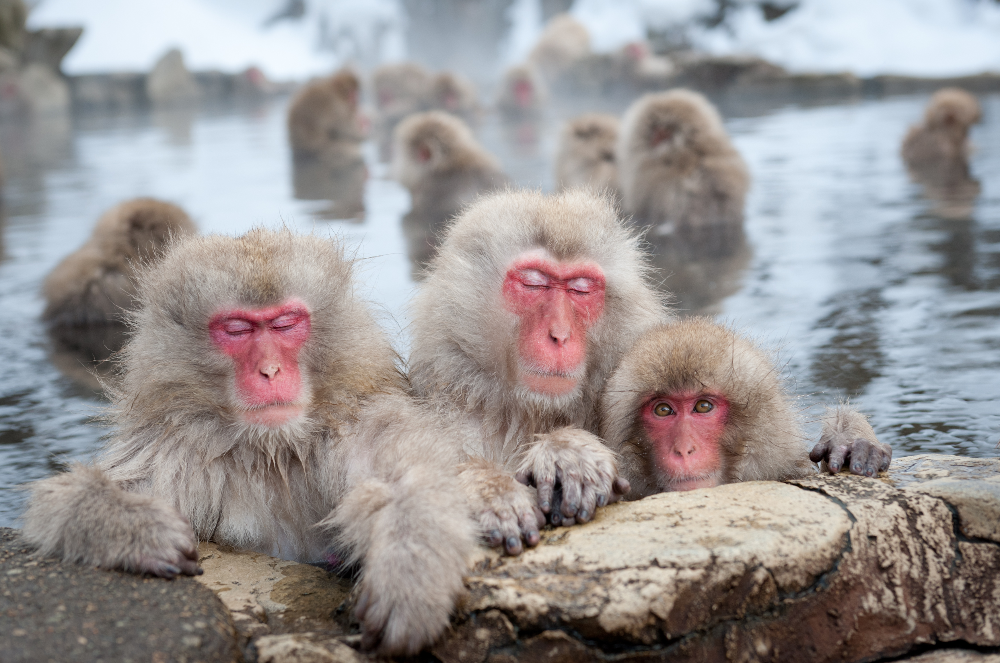
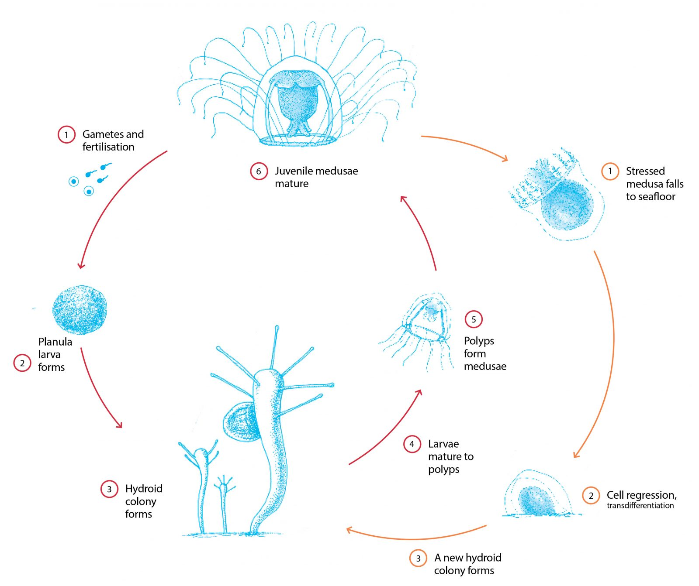

Primer video muestra monos de nieve pescando en Japón
Al describir los métodos crudos utilizados por los monos para atrapar a sus presas acuáticas, los investigadores explican cómo los animales persiguieron a los peces a través de aguas poco profundas antes de sujetarlos con ambas manos y morderlos. Habiendo obtenido evidencia de que los macacos japoneses en Kamikochi capturan y comen peces vivos, el siguiente paso para nosotros en esta investigación fue investigar cómo se propagan estos comportamientos de consumo de pescado dentro del grupo de macacos, explicó el autor del estudio, Koji Tojo, en un comunicado. “¿Es genético? ¿Es un tipo de cultura que se puede transmitir dentro del grupo?”.

Monos japones en SPA
Aunque los investigadores esperan que sus observaciones en curso proporcionen las respuestas a estas preguntas, especulan que el comportamiento probablemente evolucionó en etapas a medida que los macacos comenzaron gradualmente a explotar el río para alimentarse durante el invierno. Según su teoría, los monos probablemente comenzaron alimentándose de plantas acuáticas, lo que habría resultado en el consumo involuntario de insectos acuáticos que vivían entre esta vegetación.
Como se puede escuchar los monos son felices:
Cómo las medusas inmortales hacen retroceder el tiempo
A diferencia de la gran mayoría de los organismos vivos, Turritopsis dohrnii (una especie de medusa pequeña, biológicamente inmortal)* es capaz de rejuvenecimiento e inmortalidad biológica. Esto desafía nuestra percepción del envejecimiento, pero ¿cómo lo hace?

Ciclo vital de Turritopsis dohrnii
Los genes encontrados están asociados a diferentes claves del envejecimiento como la reparación y replicación del ADN, la renovación de la población de células madre, la comunicación célula a célula y la reducción del entorno celular oxidativo que daña las células, así como el mantenimiento de los telómeros (cromosoma extremos). Todos estos procesos están asociados con la longevidad y el envejecimiento saludable en los seres humanos.
Además, al estudiar en detalle cada etapa de su rejuvenecimiento, se han identificado una serie de cambios en la expresión génica que son necesarios para que las células se transformen, mediante un proceso conocido como desdiferenciación. Esto permite que Turritopsis dohrnii reinicie efectivamente su propio reloj biológico.
En wikipedia podemos leer lo siguiente sobre esta meduza:
La turritopsis dohrnii, anteriormente clasificada como T. nutricul y también conocida como la medusa inmortal, es una especie de pequeñas medusas encontradas en el mar Mediterráneo y en las aguas de Japón. Es uno de los casos conocidos de animales capaces de revertir su edad adulta a una edad sexualmente inmadura de forma individual.
Naturaleza: Otras Noticias
ExxonMobil predijo el cambio climático con una "exactitud impactante" en la década de 1980
Se reveló por primera vez que ExxonMobil sabía sobre el cambio climático en 2015 a través de una serie de artículos llamados Exxon: The Road Not Taken de Inside Climate News, que investigaba cómo el gigante de los combustibles fósiles ya tenía una gran cantidad de evidencia del calentamiento global y el cambio climático en el fines de la década de 1970 y principios de la de 1980. El grito de llamada del movimiento para promover la conciencia de la revelación se convirtió en "ExxonKnew".
¿Cuánto pesa una nube?
Por supuesto, por la misma razón que una persona no puede sentarse en una nube, afortunadamente una nube tampoco podría sentarse sobre nosotros. Están hechos de vapor de agua que se condensa para formar pequeñas gotas de agua que se juntan para formar lo que vemos como una nube, similar a lo que sucede en el baño después de una ducha caliente. Entonces, ¿cómo puede tener peso algo que no tiene una estructura sólida? La respuesta está en la masa colectiva de las moléculas de agua.
Identificada la raza de perro más inteligente, y no es el border collie
Los zuecos inteligentes de los perros han sido nombrados en un nuevo estudio que sometió a los perros a una serie de pruebas para ganar puntos y determinar quién es la raza canina con mayor capacidad cognitiva. El segundo lugar fue para los border collies, perros que han aparecido en gran medida en los estudios sobre inteligencia pero el pastor belga malinois se quedó con el primer lugar.